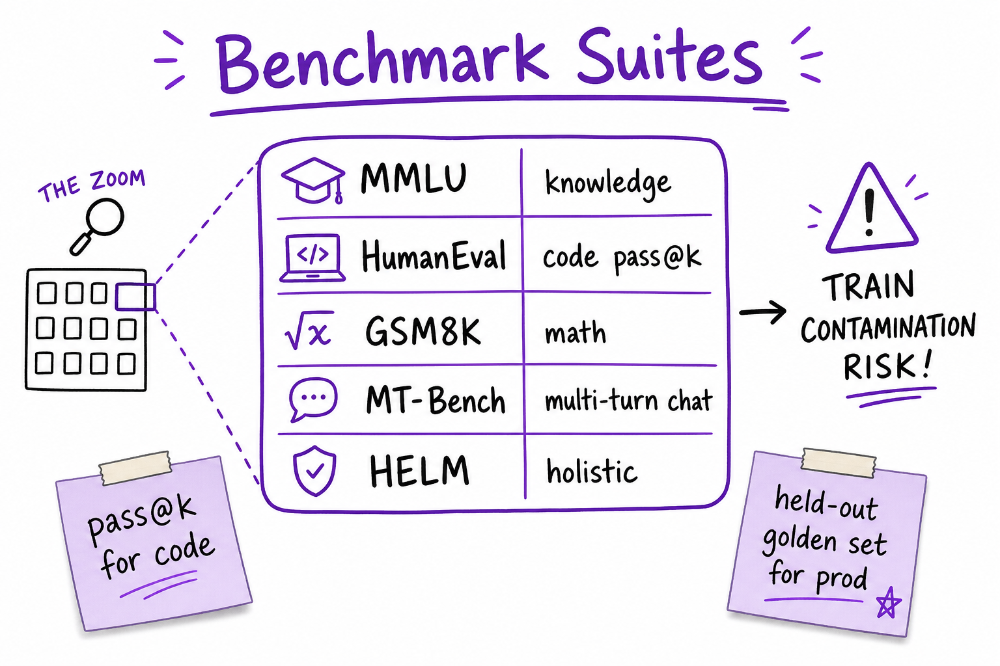
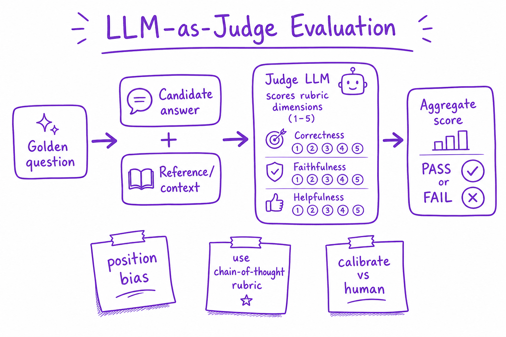

Evaluation Metrics // Fundamentals
Automatic metrics, benchmark suites, LLM-as-judge, human eval, and production KPIs for measuring LLM quality without fooling yourself with leaky benchmarks.

Evaluation spans automatic scores, public benchmarks, LLM judges, human side-by-side, and live production metrics — no single number captures chat quality.
01 — What & Why
LLM output is high-dimensional. You need task-specific metrics, held-out golden sets, and human calibration. Wrong metrics optimize for benchmarks, not users.
Production eval harness: Eval Harness.
01a — Core Concepts
| Term | Definition | Gotcha |
|---|---|---|
| Perplexity | exp(avg NLL); LM quality | Weak post-RLHF chat signal |
| BLEU/ROUGE | N-gram overlap | Poor for paraphrase |
| pass@k | Code: any of k samples passes tests | HumanEval standard |
| LLM-as-judge | Strong model scores weak model | Position bias |
| Faithfulness | Answer supported by context | Critical for RAG |
| Eval leakage | Benchmark in training data | Inflated scores |
01b — API Surface
# ragas faithfulness example
from ragas.metrics import faithfulness
# score = faithfulness(question, answer, contexts)
# OpenAI judge
judge_prompt = """Rate faithfulness 1-5. Context: {ctx}\nAnswer: {ans}"""02 — When to Use / When NOT
| Metric | Use | Skip |
|---|---|---|
| BLEU/ROUGE | Summarization baseline | Open-ended chat |
| LLM judge | Scale + rubrics | High-stakes without human cal |
| MMLU | Knowledge probe | Product-specific tasks |
| Human ELO | Model selection | Daily CI (too slow) |
03 — Architecture
Golden set -> {Automatic, Benchmark, LLM-judge, Human} -> Dashboard
-> CI gate (block if faithfulness drops >2%)
-> Production: thumbs, escalation rate, latency04 — Deep Dive: Automatic Metrics
Exact match for classification. JSON schema validation for structured output. Embedding cosine for semantic similarity. Cheap but shallow for open text.
05 — Deep Dive: Benchmark Suites

MMLU, HumanEval, GSM8K, MT-Bench — public probes with contamination risk.
MMLU: multi-domain MCQ. HumanEval: Python pass@k. GSM8K: grade-school math. Use as directional, not sole KPI.
06 — Deep Dive: LLM-as-Judge

Judge model scores candidate answers on rubric dimensions with chain-of-thought reasoning.
G-Eval style: rubric + CoT before score. Mitigate position bias by swapping A/B order. Calibrate against human labels monthly.
07 — Deep Dive: Human Evaluation
Side-by-side preference (ELO). Task-specific rubrics. 50–200 prompts minimum for model comparison. Gold standard for high-stakes.
08 — Deep Dive: Production Metrics
- User thumbs up/down rate
- Escalation to human support
- Faithfulness on sampled RAG traces
- Hallucination report rate
09 — Production & Ops
- Nightly eval on golden set in CI
- Alert on score regression >2%
- Store prompt/response for audit
- A/B new prompt versions
10 — Where It Shows Up
11 — Common Pitfalls
- Optimizing BLEU for chat
- Benchmark contamination in SFT data
- Judge model same as candidate
- No held-out golden set
- Single metric dashboards